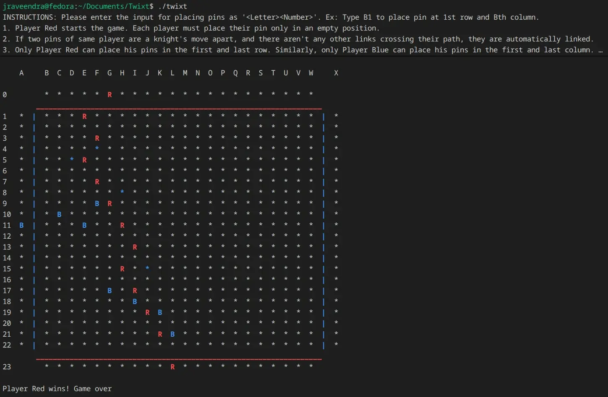
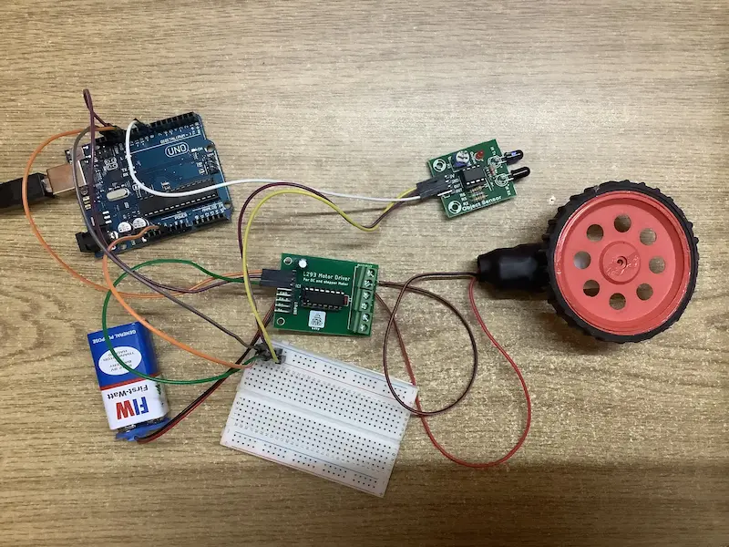
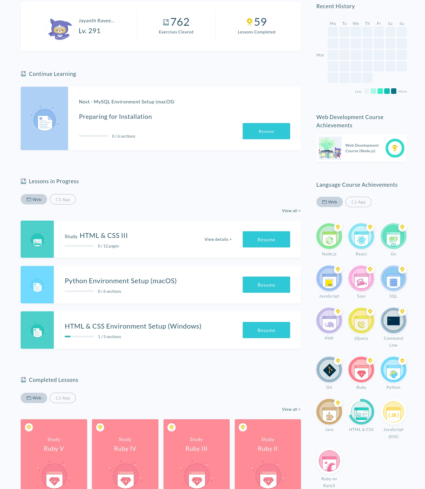

Projects
Project 1: Twixt!

What it does:
This project is a command-line implementation of the board game Twixt written in C. The program allows two players to place pins on a grid by entering coordinates, and it automatically checks whether pins can be connected and whether a player has formed a winning path. To detect a win condition, the program runs a depth-first search after each move to see if a continuous path has been formed between the required edges.Why I built it:
I built this project as part of my C programming coursework. It helped me understand how to structure a larger C program and how to manage game state with data structures and graph traversal algorithms.Reflections:
If I were to rebuild this project now, I would redesign the logic used to detect cross-links between connections, because the current implementation uses multiple nested loops and is not very efficient. I would also improve the user interface to make the game easier to play.Technology tradeoff:
The main technology tradeoff I made was using pure C instead of a higher-level language. The coursework required the program to be written in C. This made memory management and data structures more difficult to implement, but it helped me understand low-level programming concepts much better.Repo link
Project 2: Arduino

What it does:
This project involved building several small Arduino-based systems using sensors, motors, and input controls. I experimented with IR motion sensors, water pumps, DC motors, and keyboard input from a computer. One of the main projects was a small three-wheeled car that could change direction based on arrow key inputs, where the rear DC motors would rotate in different directions to turn the vehicle.Why I built it:
I built these projects in high school because I was very interested in robotics and wanted to understand how software interacts with hardware. These experiments helped me learn basic electronics, motor control, and sensor input handling.Reflections:
If I were to redo this project now, I would write the programs in the Arduino IDE using C++ instead of block-based programming. This would give me more control over the program logic and improve performance and flexibility.Technology tradeoff:
The main technology tradeoff I made was choosing block-based programming instead of writing raw code. This made it easier to get started quickly, but it limited the flexibility and optimisation that would have been possible with traditional coding.Project 3: Coding on Progate

What it does:
This project represents my early learning experience on the Progate platform, where I learned the basics of many programming languages and technologies including HTML, CSS, JavaScript, Git, Node.js, React, Go, SQL, Python, Java, and others. The platform teaches concepts through interactive lessons followed by coding exercises, which helped me build a foundation in programming and web development.Why I built it:
I used Progate in high school because I had decided that I wanted to pursue computer science, and I wanted a structured way to learn programming languages and development tools. It helped me become familiar with programming concepts before starting college.Reflections:
If I could approach this again, I would try to build small projects in each language instead of only completing lessons. Building projects would have helped me understand how each language is used in real-world applications.Technology tradeoff:
The main technology tradeoff I made was relying mainly on an online learning platform instead of building independent projects. While the platform was very structured and helpful for learning concepts, it did not provide as much practical experience as building full projects from scratch.Progate.com